沖縄そば巡りの旅、今回は西原町上原にある「沖縄そばエッチャン」さんにお邪魔してきました🍜2025.7に食べました😄
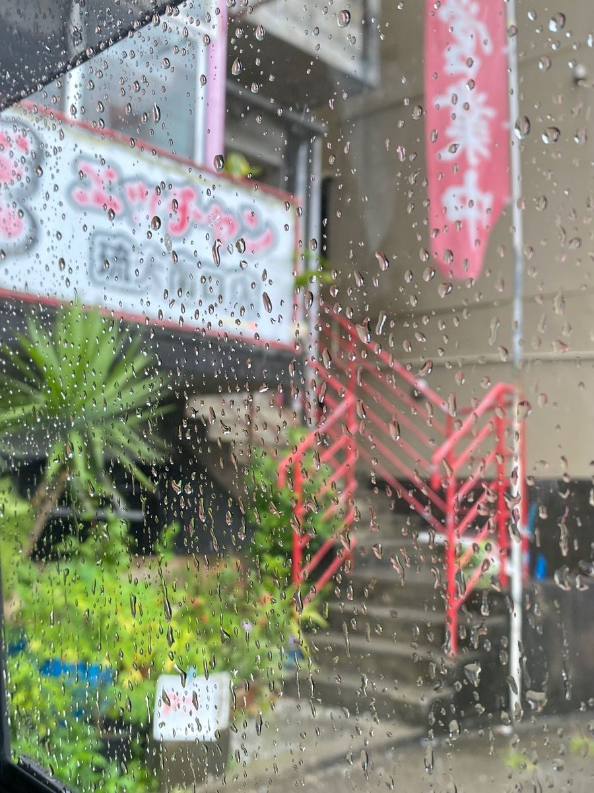
この日はあいにくの雨。窓ガラス越しの写真になってしまいましたが、「エッチャン」の看板と赤い手すりの階段が目印のお店ですね☔
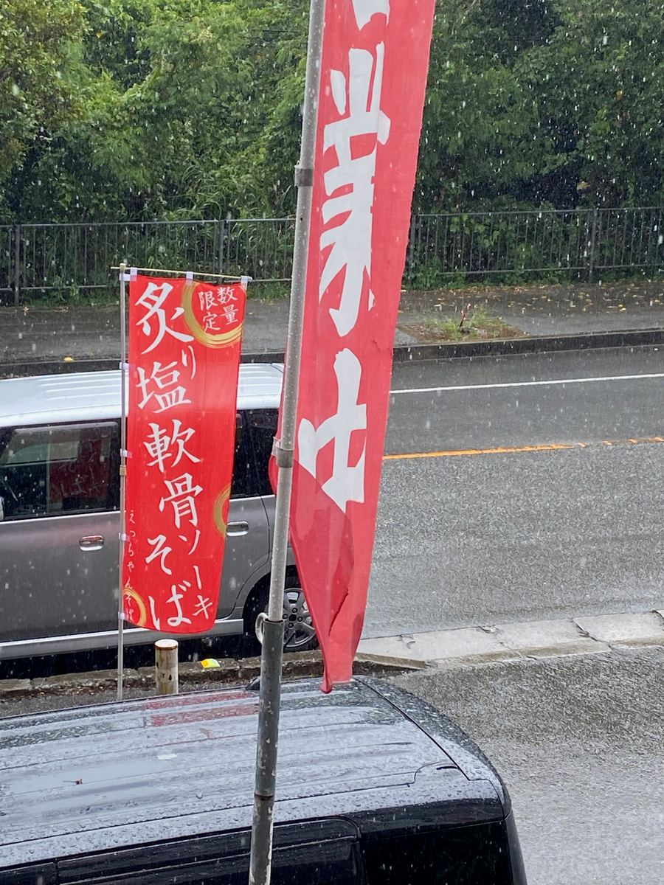
道路沿いには「営業中」と「炙塩軟骨ソーキそば」ののぼりが。塩の軟骨ソーキというのは気になりますね🤤
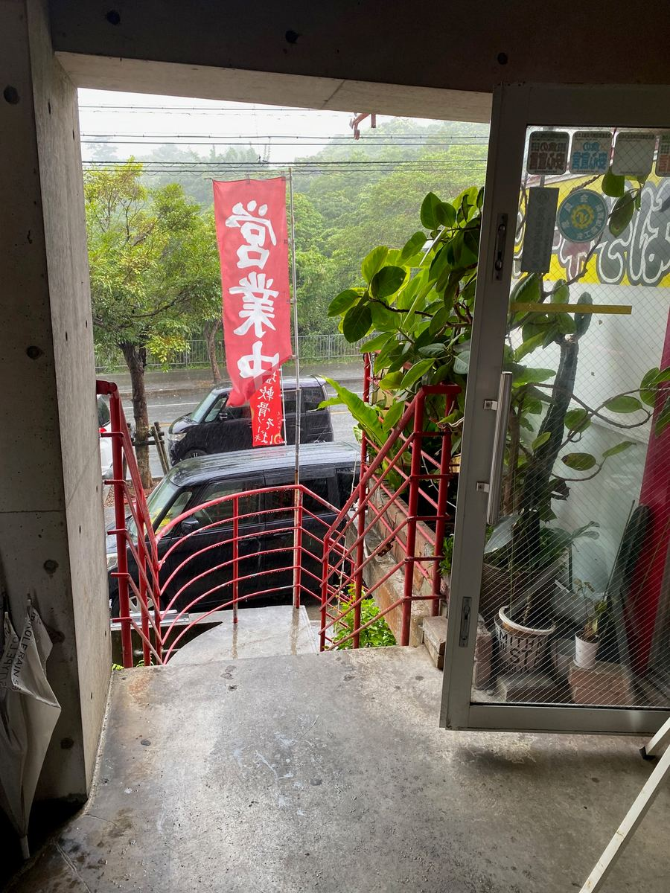
階段を上がった先が入口です。
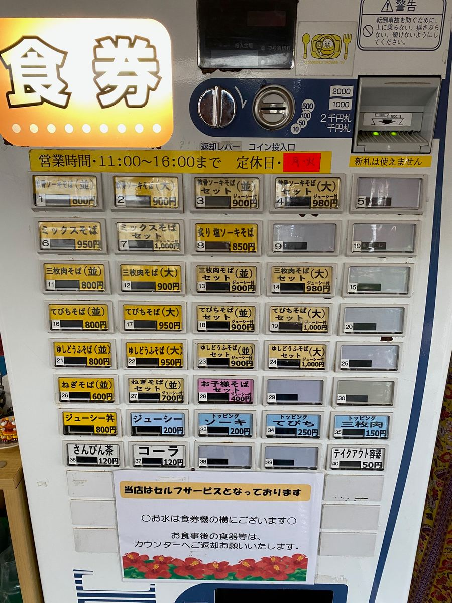
注文は入口の券売機で。ミックスそばは950円、ジューシー付きのセットは1,000円。ほかにも軟骨ソーキそば、炙り塩ソーキそば、三枚肉そば、てびちそば、ゆしどうふそば、ねぎそばと、そばの種類が豊富です。営業は11時から16時まで、定休日は月曜と火曜だそうです。
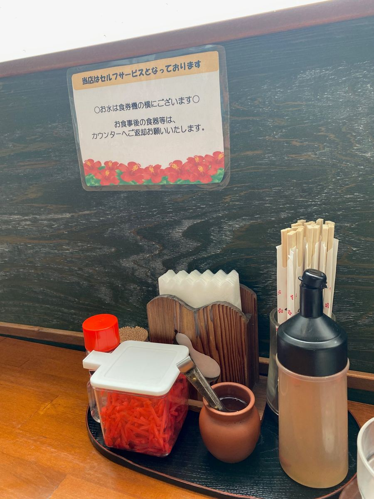
お店はセルフサービス。卓上には紅生姜やコーレーグースが置かれています。
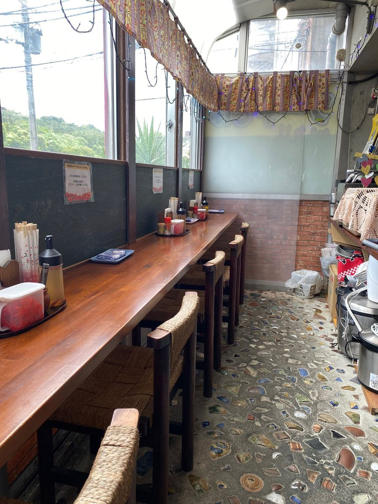
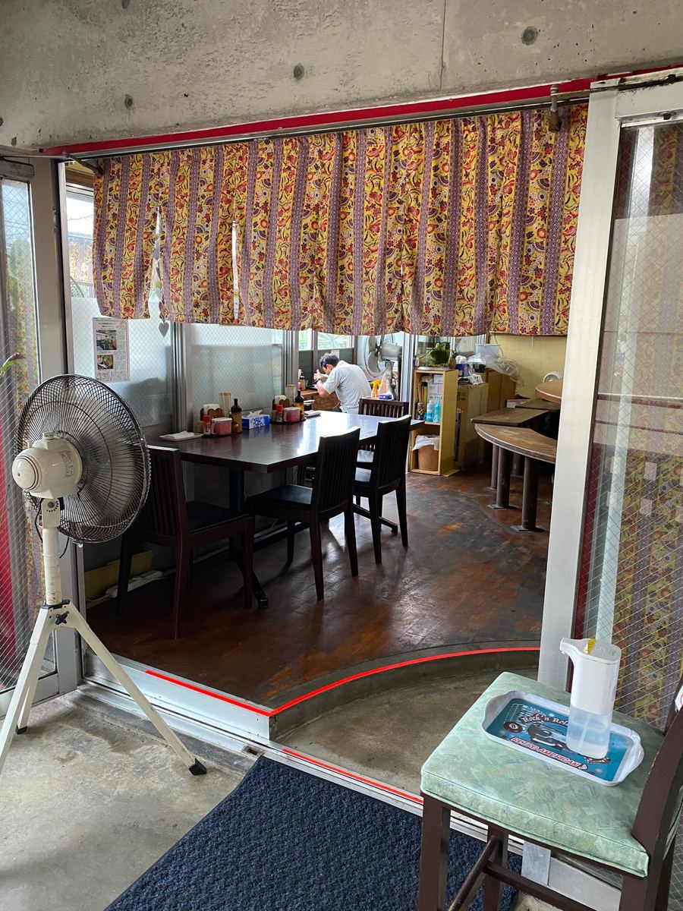
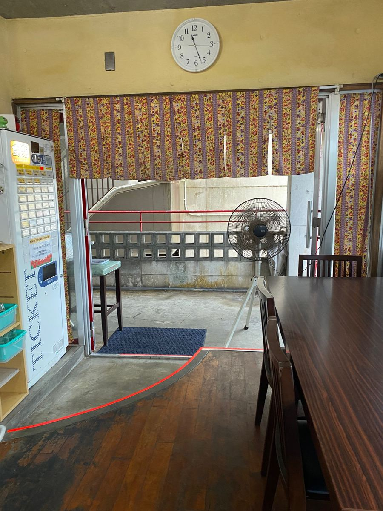
店内はカウンター席とテーブル席があって、お邪魔したときは地元のお客さんや、現場作業員さんたちでにぎわっていました。こういうお客さんが多いお店は、ハズレが少ない気がしますね😊
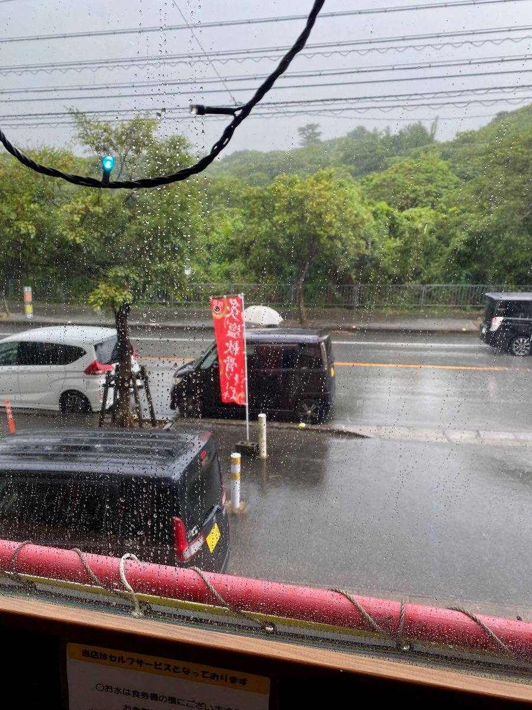
窓の外は雨模様。窓際の席からは道路と緑が見えて、のんびりした気分になります。
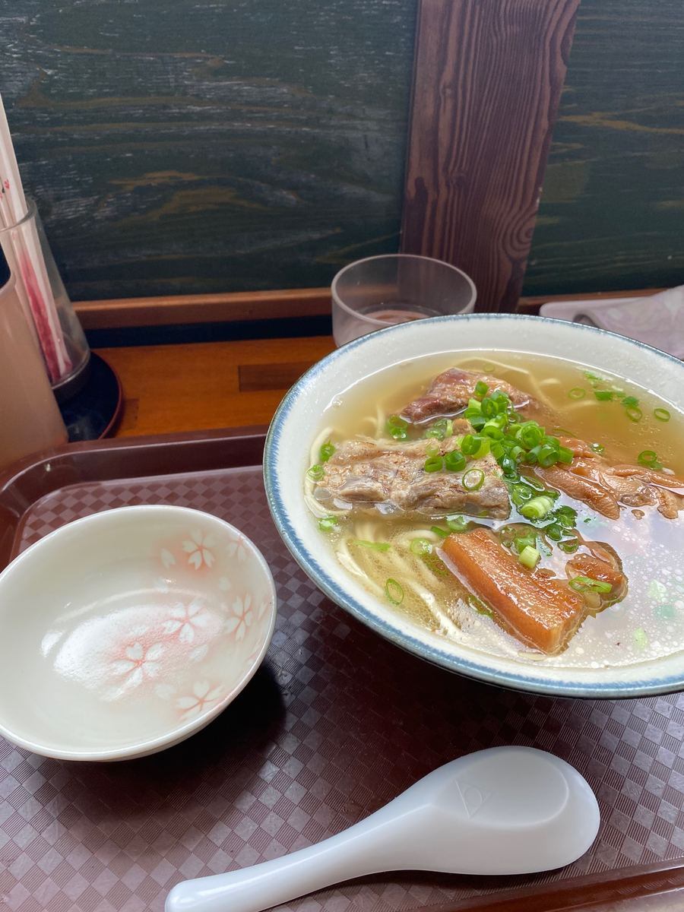
今回注文したのは「ミックスそば」。てびち、三枚肉、軟骨ソーキが乗った全部乗せの一杯です✨
まずはスープから。合わせ出汁で、豚骨が効いた感じの味わいですね😋
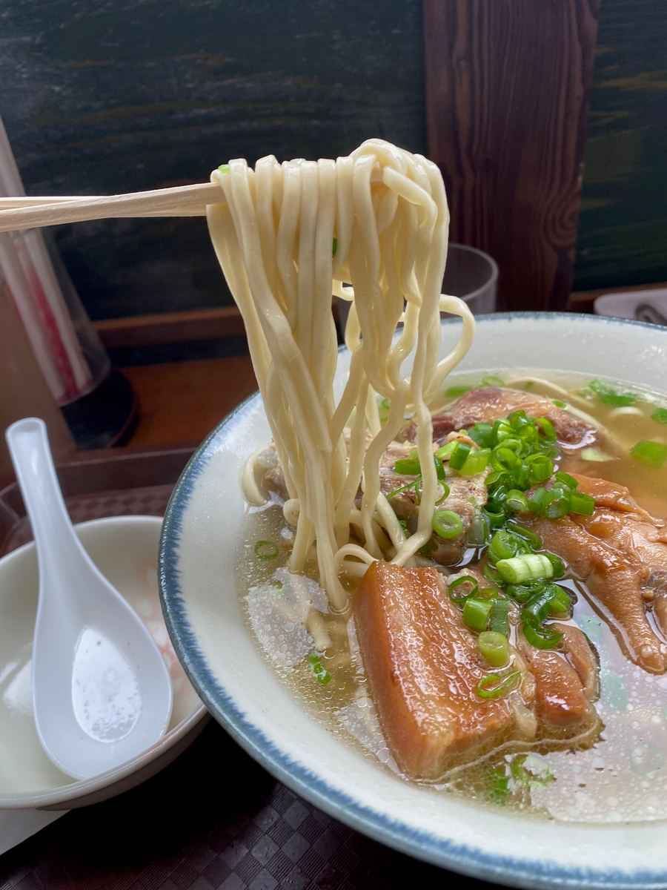
麺は細麺のストレートで、茹で加減は柔らかめ。麺とスープの相性がよくて、まあまあ美味しいです。
具材のてびちはトロトロ。面白いのが軟骨ソーキで、醤油ベースのものは軟骨が硬め、塩の軟骨ソーキは軟骨がトロトロと、食感を使い分けているんですよね。これはなかなか楽しい工夫です😄 ただ、三枚肉と軟骨ソーキは筋感が感じられました^^;
評価（10点/15点）：豚骨の効いた合わせ出汁に、柔らかめの細麺ストレート。麺とスープの相性はまあまあ良しです。トロトロのてびちに、醤油と塩で食感を変えた軟骨ソーキと、具材にも工夫がありました。三枚肉と軟骨ソーキの筋感は気になりましたが、思っていたよりもレベルが高く、まあまあ満足の一杯でしたね👌
麺 ：★★★✬☆（3.5）
スープ：★★★✬☆（3.5）
具 ：★★★☆☆（3）